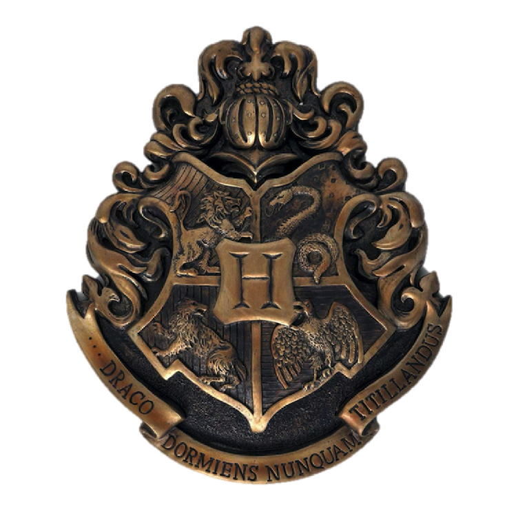
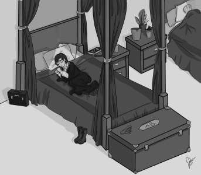

Chapter 2

Hogwarts
As the train began to slow, she could see the lights of Hogsmeade Station in the distance. Compartment doors began to slam open one after another, so she and Neville joined the crowd pushing toward the exits. They got separated from one another in the crush, and by the time she’d departed the train, the small boy was nowhere to be seen. A man larger than anyone Rigel had ever seen led them to the shore of a deep-water lake, where tiny wooden boats awaited them. She wound up sharing a boat with a pair of girls and a freckled boy with the same shade of red hair as the prefect she’d met on the train. She tried not to wonder if the rickety old things were seaworthy, but the fact that the boats moved forward under a kind of mass hypnotic spell didn’t burgeon her faith in the crafts. Once safely ashore, she and the others followed the giant man, Hagrid, up to the castle. It was bigger than she’d imagined, but other than its size, she wasn’t able to gain much impression of it in the dark. The great doors beckoned them inside, and they stood quietly in the Entrance Hall until a stern-faced woman—who introduced herself as the Transfiguration professor, McGonagall—came out to collect them.
She herded them into a line in no particular order and led them through the big oak doors into the Great Hall. Rigel’s eyes widened involuntarily at the sheer number of students in the hall. She’d thought there would be a lot fewer, with the school only accepting purebloods now, but she supposed not many people “married out of magic” these days. It just wasn’t done. She’d heard that not so long ago about fifty percent of Wizarding children were halfbloods. Now most of the muggle blood had been bred out of the gene pool once more, so muggleborns and halfbloods like herself only made up about twenty percent of the population.
There were four long tables that took up the bulk of the Hall, and a smaller, perpendicularly placed table at the far end of the room that looked to be for professors and staff. As the students gracing each table seemed to be sorted according to tie colour, Rigel deduced the seating arrangements were separated by House. She glanced about the room in general to avoid looking at anyone directly as they were led to a spot in front of the head table designated by a lump of fabric sitting on a short stool. The ceiling caught her eye and she sucked in her breath quietly. It looked as though the whole galaxy had been brought down to fill the hall. Such stars as she’d never seen before graced the empyrean. She’d heard that out in the wilderness, away from the lights of the cities, the stars and planets shone brighter, but she’d never imagined it would be such a spectacle.
Just when she had come to think perhaps there was no ceiling, only empty space, a nudge from behind brought her back to her surroundings. A girl with short blonde hair cut at a fashionable angle away from her face leaned close to whisper, “It’s enchanted to look like the sky outside, but if you don’t stop gaping like a fish at it, everyone will think you’re a commoner before you even get Sorted.”
Rigel turned her artificial grey eyes to meet amused blue ones. The blonde girl was obviously from one of the most prominent pureblood families; everything from the articulate way she spoke to the poised way she held herself suggested hours upon hours of social instruction as a child. The other girl smiled to show she wasn’t trying to be catty, but helpful, so Rigel nodded to show she was grateful for the advice. She was about to introduce herself properly when her words were cut off; the lump of fabric on the stool had begun to sing. Loudly.
“Welcome, welcome, one and all
To this fine place, in this Great Hall.
Yes, it’s that time of year once more
When I help Master Dumbledore
To place you where you need to be:
The House that is your destiny.
To those of you who always yearn
To know as much as you can learn,
Who seek the truth in every way
And plan to study every day,
Don’t worry—here you’re not alone
In Ravenclaw you’ll find your home.
To any who have talent—yes,
And always try to do their best,
Who only take the things they earn
And wait with patience for their turn
And value loyalty and trust,
Why, you belong in Hufflepuff.
If you know that you have ambition
And a cunning disposition,
If you keep your secrets close
And know that wisdom never boasts
And want to find your truest friends,
Then you must go to Slytherin.
To those of you with steady nerve,
The stout of heart who never swerve
From any duty come their way,
Who aren’t afraid to speak their say
And meet the danger at their door,
You will be great in Gryffindor.
So come to me and put me on;
I’ve never once been told I’m wrong.
I’ll find inside your deepest soul
The House able to make you whole.
Maybe it’s not a pretty sight
But this old hat will steer you right.”
The hall broke into thunderous applause, all the first-years joining in with bemusement. “We just have to try it on?” The redhead she’d shared a boat with laughed. “That’s easy!”
Professor McGonagall pulled a scroll from her robes and unrolled it. “When I call your name, come forward, sit on the stool, and try on the hat. Abbot, Hannah.”
A mousy-looking blonde girl with pigtails aquiver stepped forward nervously and sat on the stool. She gingerly placed the hat on her head, wrinkling her nose a bit as though she’d encountered a foul smell.
“HUFFLEPUFF!” the hat cried.
“So whatever you do, don’t think about how bad the hat smells or it’ll punish you by sending you to the badgers,” the short-haired girl from earlier whispered into Rigel’s ear. She had to bite her lip to hide her slight smile of amusement.
“Black, Arcturus.”
Rigel smoothed her face into an expression of detached politeness—by far the easiest neutral expression to maintain while nervous—and stepped forward toward the stool Abbot had just vacated. Her last thought before putting the hat on was that it didn’t really smell that bad.
“Why thank you, young lady,” the hat murmured in her head.
If she weren’t so tense, she would have jumped, but she kept the blank mask on her face while thinking to the hat, “You’re not going to kick me out, are you? Please let me stay. I’ll work hard, I promise—”
“Calm down, Miss Potter, I’m not a snitch—I’m a hat! I’m here to sort you, not pass judgment on your life choices. Now, let’s see… You do have quite a bit of talent, and you’re willing to work hard, but I can see that you have greater ambitions than self-satisfaction. It was courageous of you to risk so much to be here, and clever to have planned it out so perfectly, but above all sneaky, so very sly. I know just where to put someone with so many secrets to keep. Good luck in…
SLYTHERIN!”
Rigel stood calmly, though on the inside she was weak with relief. She carefully removed the hat after a whispered, “Thank you,” and turned toward the table that was clapping. On the way, her eyes met those of the girl she’d been standing next to, who mouthed, “Good job!” at her and subtly mimed holding her breath to avoid a stinky smell.
She told herself it was rude to laugh at Hufflepuffs as she took a seat at the end of the Slytherin table. There was an array of empty places around her, presumably for the other new first-years. They were who she should be focusing on—the other students who would soon become her Housemates—not the ones made Hufflepuffs. Still, when “Bones, Susan” went to Hufflepuff after a similarly distasteful expression on her face, Rigel’s lips twitched upwards at the corners without her conscious control.
Before long, she was joined by “Bulstrode, Millicent” and “Crabbe, Vincent.” Tracey Davis, Daphne Greengrass, and Gregory Goyle all quickly followed. After that, there was a lull until a sharply put-together boy with platinum blond hair and a confident expression strode forward to the tune of, “Malfoy, Draco.” Davis and Greengrass, whom Rigel had already pegged as uninteresting lackwits based on their discussing the merits of linen versus silk tablecloths upon claiming their seats, made small swooning noises as they watched the Malfoy scion put the hat on without even bothering to sit. The hat seemed to shout, “SLYTHERIN” before it even touched his perfectly groomed hair, and Rigel thought she might not have bothered to sit down either if she had been that sure of the outcome.
Malfoy’s eyes scanned the table coolly as he approached. Across the table, the large boys Crabbe and Goyle moved over hastily to make room between them, which left Rigel staring straight into slate-grey eyes as the heir to one of the oldest and most influential Dark pureblood families slid into the seat directly across from her. He nodded slightly in her direction, and she was nonplussed until she realized that, with her as Arcturus Black, they were cousins through Draco’s mother, Narcissa Malfoy née Black. She nodded back just as slightly and both turned their attention to the sorting once more as “Nott, Theodore” was made a Slytherin as well. When “Parkinson, Pandora” was called, the girl who’d warned her about acting like a peasant moved gracefully toward the stool. Her sorting took only slightly longer than Malfoy’s, though she made a great show of sitting primly on the stool and adjusting the hat on her head before brushing off imaginary lint from its brim as she set it back on the stool.
Rigel moved over just enough to extend an invitation to sit beside her without seeming eager about it, and Parkinson politely smiled her thanks as she sat to Rigel’s left and tucked her robes gracefully beneath her. “I knew you were Slytherin material,” Parkinson confided quietly, seeming content to ignore the Sorting for the time being.
“Oh really?” Rigel lifted an eyebrow in the manner she’d seen Archie appropriate when he was in pureblood-mode. “And how did you figure that while I was gaping like a country bumpkin?” There. Let the girl think she took the comment as a compliment.
The blonde girl twinkled prettily at her. “I just know these things,” she said. “For instance, I can tell you that there’s only one student left over there who will join us at this table, and he won’t be called until the very end, so you can stop trying to divide your attention between me and the hat.”
Rigel let herself blink once at the other girl. “You’re quite perceptive, Miss Parkinson.”
“Call me Pansy,” the blonde said after a considering pause. “We are, after all, going to be great friends, Mr. Black.”
“All of my great friends call me Rigel,” she said, trying out a grin that was based on her Uncle Sirius’ roguish expressions.
It must have worked, because Pansy looked ever so slightly taken aback for a moment before allowing a wry smile to grace her aristocratic features. “You are certainly your father’s son, Rigel.”
“Do you know my father?” She feigned surprise. “I shall have to chastise him for keeping such a gem to himself.” She was laying it on pretty thick, and she honestly hoped what people said about first impressions was true and she never had to act like this again, because it was making her feel a bit queasy. It was necessary that people believed she was the son of Sirius Black, however, so for a little while she would channel her uncle’s irrepressible spirit.
“Suffice it to say that every girl at this table has been warned by her mother to steer clear of the Black scion if she wishes to keep her reputation intact.” Pansy smiled with amusement, not seeming too concerned about steering clear herself. “But I think you’re all talk.”
She made a mental note to ask Sirius what he’d done at Hogwarts that had mothers a decade later fearing for their daughters’ virtue in the presence of an eleven-year-old. Though, on the other hand, she supposed she’d rather not know.
“I’m grateful that you’ve decided to look past those unmitigated rumours and give me a chance,” Rigel chose to say.
Whatever reply Pansy might have made was forgotten as “Zabini, Blaise” was Sorted into Slytherin, and McGonagall took the hat and stool away. As Dumbledore stood to make his opening speech, Pansy and Rigel turned their attention his way. With her face looking toward the Headmaster’s chair, Rigel couldn’t help but notice, from the corner of her eye, the scrutinizing gaze one Draco Malfoy was leveling at her from across the table. He must have been very curious about the cousin he’d never met, she thought.
Dumbledore was clearly an eccentric. His long, white beard was braided with ribbons in the four House colours and his pointed hat was covered with tropical flowers and birds. He said a few words, the impenetrability of which suggested that he chose them randomly from the dictionary, and waved his hands dramatically. Immediately, the tables in front of them filled with every imaginable kind of food. Starters, soups, entrees, desserts, and drinks were spread before them in a chaotic mess, and as children all around the hall began grabbing whatever was closest to them, she wondered if the randomness of the placement wasn’t intended.
Rigel put her napkin in her lap, noting that all the napkins at the Slytherin table were black, and therefore wouldn’t leave noticeable residue on black school robes the way a white napkin would have. She supposed she could get used to such details. Across the table, Crabbe and Goyle were stuffing themselves with chocolate confections, not even bothering with plates, while the blond boy between them slowly piled a variety of food onto his plate, as though he was playing the diplomat to each food group and was reluctant to show favouritism. Rigel asked Greengrass to pass the garden salad and, although the girl blinked at Rigel entirely too many times in the process, she did hand it over. Rigel piled her plate high with the leaves and dug in.
When she finished the plate and was still hungry, she helped herself to another serving of leafy goodness, ignoring the plate of steaming chicken legs directly before her.
“Don’t you want anything more substantial than that?” Pansy glanced askance at her plate with obvious curiosity.
Rigel swallowed carefully before answering. “No, thank you.” Pansy waited a beat, but when it became clear that Rigel had no intention of elaborating, she shrugged and turned to her own dinner. Rigel was both impressed and amused at the other girl’s expression of studied disinterest, so she offered, “I’m a vegetarian.”
Pansy turned back with raised eyebrows. “Is that so?”
“You don’t eat any meat?” the dark-haired girl, Bulstrode, asked, glancing down at her own steak and kidney pie as if she couldn’t bear the thought of giving it up forever.
“I eat some fish,” Rigel said. The sturdy girl only shook her head mournfully in response and turned back to her own dinner.
Rigel had debated whether or not to change her diet for this masquerade, but eventually decided against it. For one, she wasn’t sure if she could fake a liking for meat for seven years, and for another, her vegetarian diet would go a long way toward explaining why she remained so small and scrawny while the other boys were growing taller and broader. Archie wasn’t a vegetarian, but no one here would know that, and if it somehow got back to Sirius that his son’s eating habits had changed, she could always say she had done it out of nostalgia for her cousin. It was the kind of thing Archie would do in a fit of dramatics.
She finished her dinner quietly, finding the pumpkin juice to be dessert enough for her, and almost didn’t notice when the Malfoy heir once again turned his considering gaze her way. He wasn’t very subtle, however, and after his second obvious glance Rigel noticed Pansy noticing it, too. Pansy didn’t look surprised that Malfoy might be curious about Rigel, so she supposed all the kids here must know the intricate system of blood connections that bound them to one another.
By the time everyone had finished eating, it was quite late, and Rigel was more than ready to go to sleep. Even her nerves at having come this far couldn’t make her listen with more than half an ear to Dumbledore’s informational speech about rules, forbidden forests, and so on. When they were finally released, she fell into step beside Pansy as they and the other first-years followed the Slytherin prefects into the dungeons. By the time they reached the entrance to the common room, she was freezing as well as sleepy. Didn’t they heat anything below the kitchens? One of the prefects, a girl with long, black hair and heavy eye-makeup, turned and addressed their group.
“This is the common room. You probably won’t be able to find it on your own for a few weeks because it just looks like a blank stretch of wall, but that’s to stop the other Houses from finding it, so whatever you do don’t draw a map or place markers along the corridors to find your way back.” She said it in such a way that Rigel suspected the rules were based on experience. “Just follow an older Slytherin until you learn your way around.”
“Don’t be too proud to ask directions, either,” another prefect added. “The upper-years had to do the same thing when they were first-years. In this House, no one expects you to figure everything out on your own like a Ravenclaw but, on the other hand, we’re not Hufflepuffs. If you want help, you have to ask, and don’t expect it to be free.”
“The password is Ouroboros,” said the first prefect. She stood to the side as the wall slid open and blessedly warm air from the common room wafted out into the corridor. If keeping the corridors in the dungeons uncommonly cold was some sort of psychological trick to make them associate the common room with cozy hospitableness, she couldn’t fault its execution. They all shuffled inside gratefully, and the prefects herded them over to one of the great fireplaces along the walls to get their bearings and warm up.
The common room was very dark, with the light of flickering flames from the torches and fires casting eerie shadows over every surface. Once she grew accustomed to the low lighting, though, she found it quite elegant, if a little claustrophobic due to the low ceilings. The windows didn’t help, since all they revealed at the moment was pitch-black lake water, but she supposed more light would filter down from the surface during the day. The furniture she thought well suited to House Slytherin. All of it was low-backed, so that it would be obvious who was in each seat even from behind, and none of it was cluttered too closely together or tucked way back into corners. There was nowhere to hide. Thankfully, the furnishings were made of basic, dark woods that left the green and silver fabric scheme something short of garish. Seven different hallways led off like spokes on half a wheel from the main room. One for each year, she figured.
The prefect with the long, black hair came back over to them and said. “Change of plans. Something’s come up, so our Head of House will hold the start-of-term meeting in the morning instead of this evening. That means all of you must be up and finished with breakfast thirty minutes early tomorrow, so as soon as you get situated, go to bed. First-year dorms are down the hallway all the way to your right. To protect the safety and privacy of Slytherin students, no one but the students in each year can pass through the doorway to their respective halls. Use this privacy wisely, as students who abuse the privilege will find it revoked for all their year mates.” She waved them all toward their dorms, saying, “Go on, little snakes; your room assignments are on the outside of the doors. Oh, and boys: I wouldn’t recommend trying to go into one of the girls’ dorms. You won’t like the consequences. Goodnight.”
Rigel tiredly followed Pansy and the others down the first-year hallway. There were four doors along the corridor, two for the girls, and two for the boys. The girls were quite pleased to only be two to a room, instead of three like the boys, but the only boy who looked put out by the room assignments was Zabini, who was assigned to a room with Crabbe and Goyle. At the very end of the hall, on the right hand side, was a door with “Arcturus Black” written right above “Draco Malfoy” and “Theodore Nott,” which Rigel pushed open mechanically, making a beeline for the bed with her trunk sitting at the foot. Her roommates filed in behind her and presumably started getting ready for bed, but she didn’t pay them any attention. Instead, she went straight to her mattress and was asleep upon it within moments. The relief she felt at having made it all the way to the Slytherin dorms without being kicked out followed her into her dreams, making her smile peacefully as she drifted off to thoughts of what the morning would bring.

Table of contents
- The Pureblood Pretense by Violet Matter
- The Serpentine Subterfuge by Violet Matter
- The Ambiguous Artifice by Violet Matter
-
The Futile Façade by murkybluematter
- Cover
- Title Page
- Summary
- 1. Healing
- 2. Correspondence
- 3a. Seifer's Solution
- 3b. The Free Dueling Tournament
- 4. The Quidditch World Cup
- 5. Acknowledgement
- 6. Allegiances
- 7. Negotiations
- 8a. Weighing of the Wands
- 8b. The Forbidden Forest
- 9. Blood Wards
- 10a. Freebrewing
- 10b. The Rod of Zuriel
- 11. Champion of Charity: Rigel Black Gives Back
- 12. Ascending
- 13. The Final Task
- Who is RBC?
- Epilogue